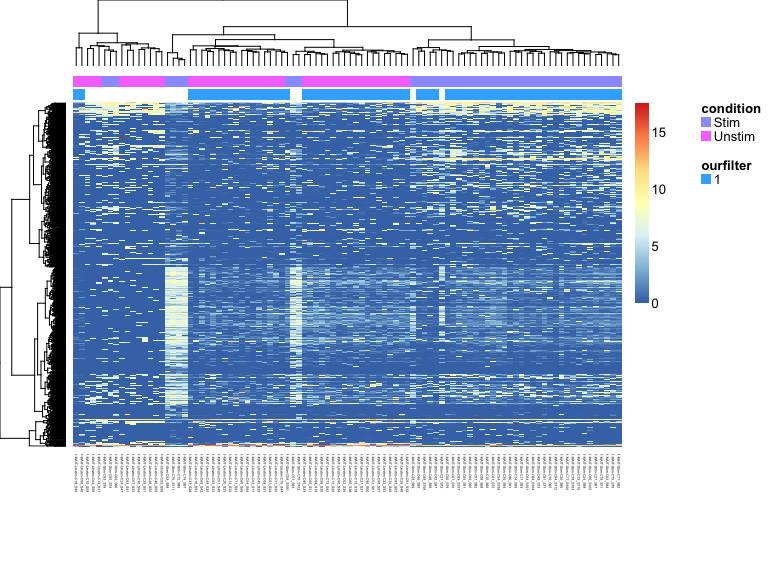
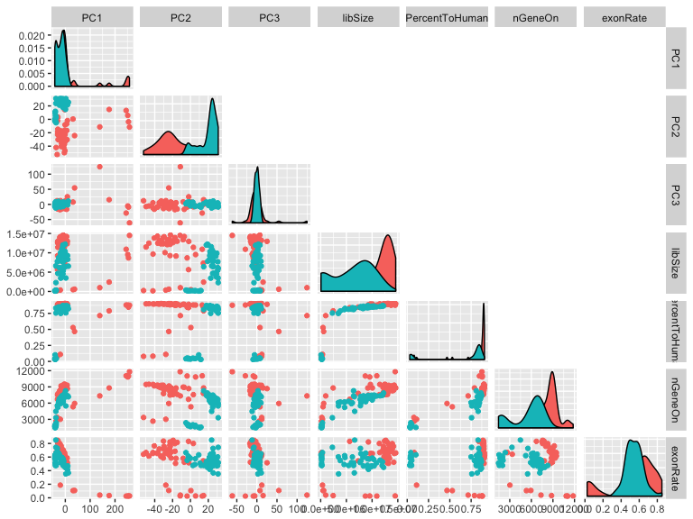
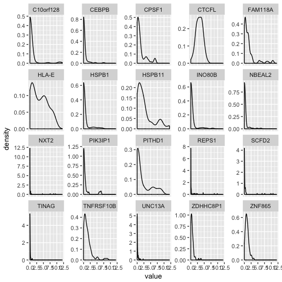
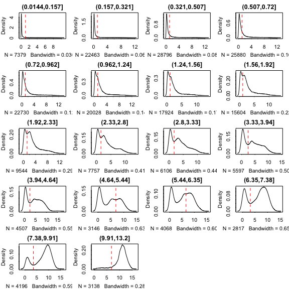
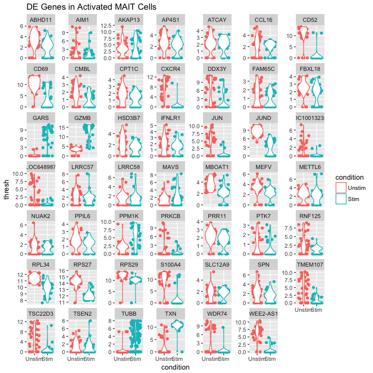
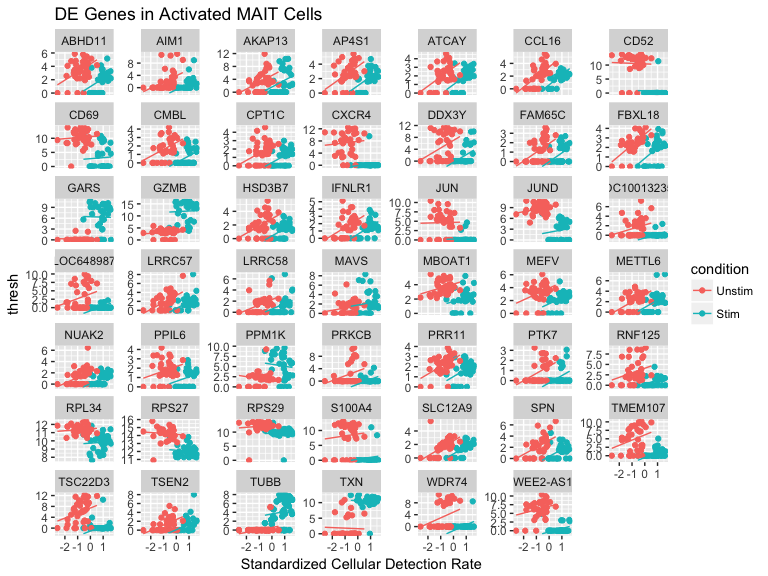
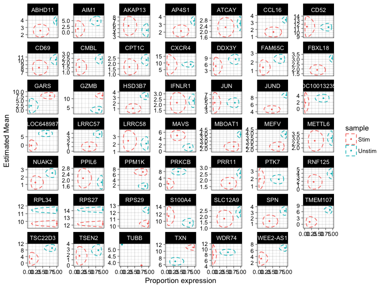
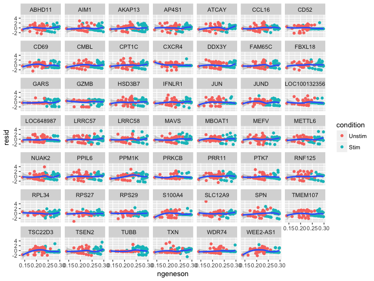
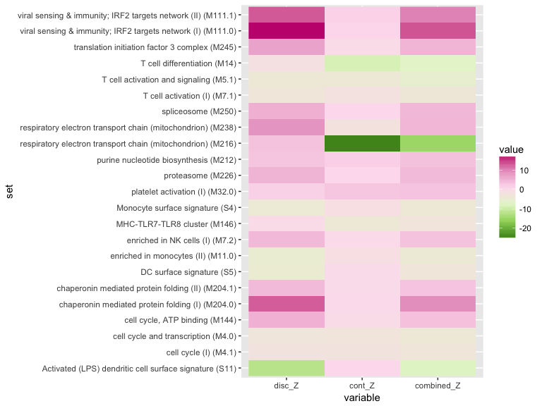

Using MAST with RNASeq: MAIT Analysis.
Greg Finak
Andrew McDavid
Masanao Yajima
Jingyuan Deng
Vivian Gersuk
Alex Shalek
Chloe K. Schlicter
Hannah W. Miller
M. Juliana McElrath
Martin Prlic
Peter Linsley
Raphael Gottardo
2018-10-26
Source:vignettes/MAITAnalysis.Rmd
MAITAnalysis.RmdOverview
We will learn how to use the package MAST to analyze single cell RNAseq experiments.
Starting from a matrix of counts of transcripts (cells by transcripts), we will discuss the preliminary steps of quality control, filtering, and exploratory data analysis. Once we are satisfied that we have high-quality expression, we will consider tests for differential expression and ways to visualize results. It is often helpful to synthesize from gene-level into module-level statements. Therefore, we will learn how to use MAST to test for gene set enrichment.
We will apply these methods to a data set of Mucosal Associated Invariant T cells (MAITs), measured on the Fluidigm C1. Half of the cells have been cytokine stimulated.
suppressPackageStartupMessages({
library(ggplot2)
library(GGally)
library(GSEABase)
library(limma)
library(reshape2)
library(data.table)
library(knitr)
library(TxDb.Hsapiens.UCSC.hg19.knownGene)
library(stringr)
library(NMF)
library(rsvd)
library(RColorBrewer)
library(MAST)
})
#options(mc.cores = detectCores() - 1) #if you have multiple cores to spin
options(mc.cores = 1)
knitr::opts_chunk$set(message = FALSE,error = FALSE,warning = FALSE,cache = FALSE,fig.width=8,fig.height=6, auto.dep=TRUE)Loading and transforming data
First, let’s set some constants that we can use throughout this analysis.
Next, let’s load the data, which consists of a matrix of log2 + 1 transcripts per million (TPM), as output by RSEM. Internally, we use the packages RNASeqPipelineR and preprocessData to facilitate aligning and quantitating the raw reads. This is an experiment on Mucosal Associated Invariant T-cells from a single healthy donor. A number of cells were subjected to reverse transcription and library prep immediately, while others were first stimulated for 24 hours with a cytokine cocktail.
FromMatrix constructs an object from a matrix (genes \(\times\) cells) of expression, a data.frame of cell-level covariance and a data.frame of feature-level covariates. In this case, there are 96 single cells measured over 16302 genes. We derive from the SummarizedExperiment class, which makes it easy for feature (row) and cell (column) metadata to come along for the ride. There is also a constructor, FromFlatDF for flattened data where measurements, and cell and feature covariates are intermingled.
Exploratory Data Analysis
Let’s explore these data with a heatmap and some PCA.
aheatmap(assay(scaRaw[1:1000,]), labRow='', annCol=as.data.frame(colData(scaRaw)[,c('condition', 'ourfilter')]), distfun='spearman')
set.seed(123)
plotPCA <- function(sca_obj){
projection <- rpca(t(assay(sca_obj)), retx=TRUE, k=4)$x
colnames(projection)=c("PC1","PC2","PC3","PC4")
pca <- data.table(projection, as.data.frame(colData(sca_obj)))
print(ggpairs(pca, columns=c('PC1', 'PC2', 'PC3', 'libSize', 'PercentToHuman', 'nGeneOn', 'exonRate'),
mapping=aes(color=condition), upper=list(continuous='blank')))
invisible(pca)
}
plotPCA(scaRaw)
From the PCA and heatmap we can tell that we’ve got some data quality issues with low-diversity libraries, and libraries where we capture a lot of non mRNA. We’ll set a filtering threshold using the Potter Stewart method, though Shalek et al and others have come up with more principled ways, such as training SVM on the expression data and quality metrics to predict failed libraries. Though this still presupposes a set of labeled “failures” and “successes”.
Filtering
sca <- subset(scaRaw,filterCrit)
eid <- select(TxDb.Hsapiens.UCSC.hg19.knownGene,keys = mcols(sca)$entrez,keytype ="GENEID",columns = c("GENEID","TXNAME"))
ueid <- unique(na.omit(eid)$GENEID)
sca <- sca[mcols(sca)$entrez %in% ueid,]
## Remove invariant genes
sca <- sca[sample(which(freq(sca)>0), 6000),]We’ll now consider only cells that pass the filter. subset(scaRaw, filterCrit) is just syntactic sugar for subsetting by columns, but who doesn’t like a little sugar? We’ll also limit ourselves to transcripts that have an EntrezGene id to facilitate interpretation. Lastly, we will take a subsample of about 50% of the total genes to keep this vignette from taking too long or too much memory.
Recalculating the cellular detection rate (ngeneson)
We and others have found that the number of genes detected in a sample, which we deemed the cellular detection rate is often the first principal component. After we removed genes low expression, perhaps we want to recalculate it.
cdr2 <-colSums(assay(sca)>0)
qplot(x=cdr2, y=colData(sca)$nGeneOn) + xlab('New CDR') + ylab('Old CDR')
We can assign this to a new column in the colData in the obvious fashion:
PCA on filtered cells
 PC1 now primarily captures stimulation effects. We still observe that PC2 correlates with the exonRate and ngeneson, but the data are more smoothly distributed.
PC1 now primarily captures stimulation effects. We still observe that PC2 correlates with the exonRate and ngeneson, but the data are more smoothly distributed.
Exercises on loading and transforming data
- These samples were reverse-transcribed and amplified on two Fluidigm C1 chips (and stimulation is completely confounded with chip…) The chip location is contained in the column
wellKeyincolData(sca)as a three-character string likeCXX. How could you extract the chip location and add it as column to the cellular data? Hint:str_split_fixedorstr_extractmay be your friends here.
Adaptive thresholding
Single cell gene expression data are known to be zero-inflated and bimodal, which is feature we observe here as well.
scaSample <- sca[sample(which(freq(sca)>.1), 20),]
flat <- as(scaSample, 'data.table')
ggplot(flat, aes(x=value))+geom_density() +facet_wrap(~symbolid, scale='free_y')
Here we’ve taken subsample of size 20, then flattened it into a data.table to make it easy to plot with ggplot2.
thres <- thresholdSCRNACountMatrix(assay(sca), nbins = 20, min_per_bin = 30)
par(mfrow=c(5,4))
plot(thres)
We suspect that the left-most mode corresponds to non-specific hybridization of mRNA or genomic DNA. Here we apply an adaptive scheme to threshold values below a cut-off that depends on the intensity of the signal cluster from the gene (determined from the median expression value). When we plot the threshold vs genes binned by median expression value, we can see this evolution of thresholding value.
assays(sca) <- list(thresh=thres$counts_threshold, tpm=assay(sca))
expressed_genes <- freq(sca) > freq_expressed
sca <- sca[expressed_genes,]We’ll limit ourselves to genes that are found in at least 0.2 of the sample (since we won’t have any power to conclude much about less frequent transcripts). We will also downsample to 1000 genes to keep this vignette from running too slowly.
Differential Expression using a Hurdle model
We’ll fit a hurdle model, modeling the condition and (centered) ngeneson factor, thus adjusting for the cellular detection rate.
In order to have more interpretable coefficients, we’ll set the reference level of the factor to be the “unstimulated” cells.
cond<-factor(colData(sca)$condition)
cond<-relevel(cond,"Unstim")
colData(sca)$condition<-cond
zlmCond <- zlm(~condition + cngeneson, sca)
# The following are equivalent
## lrt <- lrTest(zlm, "condition")
## lrt <- lrTest(zlm, CoefficientHypothesis('conditionStim'))
# This would test if 2*cngeneson=conditionStim
# This is sheer nonsense biologically and statistically, but gives an example of the flexibility.
## lrt <- lrTest(zlm, Hypothesis('2*cngeneson-conditionStim'))We could run a likelihood ratio test here, testing for differences when we drop the condition factor. Note that any arbitrary contrast matrix can be tested here, and specified either using a matrix or syntactically. See Hypothesis for details.
#only test the condition coefficient.
summaryCond <- summary(zlmCond, doLRT='conditionStim')
#print the top 4 genes by contrast using the logFC
print(summaryCond, n=4)## Fitted zlm with top 4 genes per contrast:
## ( log fold change Z-score )
## primerid conditionStim cngeneson
## 11264 -4.5 3.7*
## 125061 -3.3 4.1*
## 1327 1.1 3.6*
## 1831 -6.5* 2.4
## 1968 0.3 4.1*
## 2353 -7.8* 0.4
## 678 -6.3* -0.8
## 7296 6.2* 1.4## Fitted zlm with top 4 genes per contrast:
## ( Wald Z-scores on discrete )
## primerid conditionStim cngeneson
## 100132356 -4.0* 2.2
## 100506548 -2.6 4.2*
## 134147 -4.0* 2.9
## 163702 -3.4 4.5*
## 23243 -2.2 4.2*
## 29968 3.9* 0.1
## 558 -4.0* 3.8
## 6360 -3.2 4.6*## Fitted zlm with top 4 genes per contrast:
## ( Wald Z-scores tests on continuous )
## primerid conditionStim cngeneson
## 1652 3.2 -4.0*
## 4818 -4.7* 2.2
## 51188 1.5 -4.0*
## 6164 -5.3* 0.8
## 6232 -6.1* -0.7
## 6482 4.3* -6.2*
## 9459 3.1 -3.8*But often of more general use is this delicious syntactic sugar to make a giant data.table containing coefficients, standard errors, etc, for the various model components. Many Bothan spies died so that we could pretty-print this summary of the top differentially expressed genes.
Strip off the $datatable component to stop this pretty-printing (or call print.default.)
summaryDt <- summaryCond$datatable
fcHurdle <- merge(summaryDt[contrast=='conditionStim' & component=='H',.(primerid, `Pr(>Chisq)`)], #hurdle P values
summaryDt[contrast=='conditionStim' & component=='logFC', .(primerid, coef, ci.hi, ci.lo)], by='primerid') #logFC coefficients
fcHurdle[,fdr:=p.adjust(`Pr(>Chisq)`, 'fdr')]
fcHurdleSig <- merge(fcHurdle[fdr<.05 & abs(coef)>FCTHRESHOLD], as.data.table(mcols(sca)), by='primerid')
setorder(fcHurdleSig, fdr)We see that there are 287 genes significant at a FDR of 5% and with a log-fold change larger than 0.6.
Visualization of 50 most differentially expressed genes
entrez_to_plot <- fcHurdleSig[1:50,primerid]
symbols_to_plot <- fcHurdleSig[1:50,symbolid]
flat_dat <- as(sca[entrez_to_plot,], 'data.table')
ggbase <- ggplot(flat_dat, aes(x=condition, y=thresh,color=condition)) + geom_jitter()+facet_wrap(~symbolid, scale='free_y')+ggtitle("DE Genes in Activated MAIT Cells")
ggbase+geom_violin()  Here is a standard violin plot showing how expression differs in each gene between stimulated and unstimulated cells. What could be improved about this visualization to make it more accurately reflect the model that’s being fit?
Here is a standard violin plot showing how expression differs in each gene between stimulated and unstimulated cells. What could be improved about this visualization to make it more accurately reflect the model that’s being fit?
flat_dat[,lmPred:=lm(thresh~cngeneson + condition)$fitted, key=symbolid]
ggbase +aes(x=cngeneson) + geom_line(aes(y=lmPred), lty=1) + xlab('Standardized Cellular Detection Rate') Really we are doing an analysis of covariance (ANCOVA), where we ask if at each value of cngeneson if the stimulated cells differ from the unstimulated, in multiple module components. That is a little bit complicated to visualize, so we’ll settle for just showing what the ANCOVA looks like on the zero-inflated data. Adding these fitted values is easy with data.table on the melted data.
Visualizing both components
## This is all rather kludgy at the moment
MM <- model.matrix(~condition,unique(colData(sca)[,c("condition"),drop=FALSE]))
rownames(MM) <- str_extract(rownames(MM), 'Stim|Unstim')
predicted <- predict(zlmCond,modelmatrix=MM)
## Avert your eyes...
predicted[, primerid:=as.character(primerid)]
predicted_sig <- merge(mcols(sca), predicted[primerid%in%entrez_to_plot], by='primerid')
predicted_sig <- as.data.table(predicted_sig)
## plot with inverse logit transformed x-axis
ggplot(predicted_sig)+aes(x=invlogit(etaD),y=muC,xse=seD,yse=seC,col=sample)+
facet_wrap(~symbolid,scales="free_y")+theme_linedraw()+
geom_point(size=0.5)+scale_x_continuous("Proportion expression")+
scale_y_continuous("Estimated Mean")+
stat_ell(aes(x=etaD,y=muC),level=0.95, invert='x') Lastly, we can visualize how each component of the hurdle model is combined to yield a differential test by plotting the estimated coefficients (and standard errors) as a scatter plot. These confidence ellipses are drawn based on the \(\chi^2_2\) distribution on the simultaneous test that either coefficient differs from zero. What do you notice about the relationship between the confidence interval on the proportion (x) and mean (y)?
Heatmap of MAITs based on most differentially expressed genes
Here’s what the 50 most significantly differentially expressed(DE) genes look like.
mat_to_plot <- assay(sca[entrez_to_plot,])
rownames(mat_to_plot) <- symbols_to_plot
aheatmap(mat_to_plot,annCol=colData(sca)[,"condition"],main="DE genes",col=rev(colorRampPalette(colors = brewer.pal(name="PiYG",n=10))(20))) Some of the activated MAITs have transcriptional profiles more similar to unactivated MAITS.
Exercises on hurdle model differential expression
- In some of the libraries it was possible to recover portions of the T-cell receptor alpha and beta chains from the reads. Behold, we live a golden age:
##
## other TRBV20 TRBV4 TRBV6 <NA>
## 9 5 4 18 37#Note that we currently throw an uninformative error if a covariate is `NA`
scaHasBeta <- subset(sca, !is.na(beta))How could you test for differential expression between TCR beta subtypes among scaHasBeta, the cells in which the TCR was successfully inferred? What is worrying about this procedure?
Residuals
In the MAST paper, we assessed this further by examining a residual from the Hurdle linear model. This is not an entirely well-defined concept, as there are really two residuals in the Hurdle model, and there are multiple forms of residual that one can consider in logistic regression. Nonetheless, it can be a useful diagnostic. You can get a form of deviance residual by supplying a “hook” function to be called after each regression.
For example, in the subset of differentially expressed genes, we can refit the model and pull out the residual.
scaDE <- sca[entrez_to_plot,]
zlmResidDE <- zlm(~condition + cngeneson, scaDE, hook=deviance_residuals_hook)
residDE <- zlmResidDE@hookOut
residDEMatrix <- do.call(rbind, residDE)The residDE was a list of residuals (one per gene in scaDE). We concatenated them into a matrix.
Now we can add residDEMatrix as another component of the “assay”:
assays(scaDE) <- c(assays(scaDE), list(resid=residDEMatrix))
scaResidFlat <- as(scaDE, 'data.table')
scaResidFlat[1:4,]## primerid entrez symbolid wellKey condition nGeneOn libSize
## 1: 134147 134147 CMBL 1-MAIT-Stim-C05_S91 Stim 8805 10055037
## 2: 1831 1831 TSC22D3 1-MAIT-Stim-C05_S91 Stim 8805 10055037
## 3: 558 558 AXL 1-MAIT-Stim-C05_S91 Stim 8805 10055037
## 4: 6232 6232 RPS27 1-MAIT-Stim-C05_S91 Stim 8805 10055037
## PercentToHuman MedianCVCoverage PCRDuplicate exonRate pastFastqc ncells
## 1: 0.896 0.93833 0.756202 0.651 PASS 1
## 2: 0.896 0.93833 0.756202 0.651 PASS 1
## 3: 0.896 0.93833 0.756202 0.651 PASS 1
## 4: 0.896 0.93833 0.756202 0.651 PASS 1
## ngeneson cngeneson TRAV1 TRBV6 TRBV4 TRBV20 alpha beta ac
## 1: 0.2764538 0.8847385 10.39006 0 0 0 TRAV1 <NA> TRAV1.Stim
## 2: 0.2764538 0.8847385 10.39006 0 0 0 TRAV1 <NA> TRAV1.Stim
## 3: 0.2764538 0.8847385 10.39006 0 0 0 TRAV1 <NA> TRAV1.Stim
## 4: 0.2764538 0.8847385 10.39006 0 0 0 TRAV1 <NA> TRAV1.Stim
## bc ourfilter thresh tpm resid
## 1: <NA> TRUE 1.526069 1.5260688 0.7553895
## 2: <NA> TRUE 0.000000 0.6415460 -0.5326753
## 3: <NA> TRUE 0.000000 0.9259994 -1.7369755
## 4: <NA> TRUE 11.416877 11.4168767 -0.5908884ggplot(scaResidFlat, aes(x=ngeneson, y=resid))+geom_point(aes(col=condition))+geom_smooth()+facet_wrap(~symbolid) This allows us, for example, to evaluate model diagnostics such as this “residuals vs variable” plot to check the linearity assumption of “ngeneson”. One can also conduct PCA or examine the correlation matrix to look for co-expressing modules of genes.
Gene Set Enrichment Analysis
We use a competitive gene set enrichment test, in which a contrast (hurdle model coefficient) from various gene sets of interest is compared to the background, accounting for the intergene correlation of the module coefficient.
To estimate the intergene correlation of the contrast, we use bootstrapping. Cells (columns in sca) are sampled with replacement a number of times and we refit the model. At some point, we may implement a GEE-like method to estimate the intergene correlation through asymptotic calculations. But in the meantime, the bootstrapping can be slow, although is pleasingly parallelizable. To avoid setting the server farm alight, we will work with only a subset of the genes, and only calculate 5 bootstrap replicates. This would be completely inadequate if you wanted to report these results.
# bootstrap, resampling cells
# R should be set to >50 if you were doing this for real.
boots <- bootVcov1(zlmCond, R = 4)module <- "BTM"
min_gene_in_module <- 5
packageExt <- system.file("extdata", package='MAST')
module_file <- list.files(packageExt, pattern = module, full.names = TRUE)
gene_set <- getGmt(module_file)
gene_ids <- geneIds(gene_set)
gene_ids <- gene_ids[!names(gene_ids)%like%"TBA"&!names(gene_ids)%like%"B cell"]
sets_indices <- limma::ids2indices(gene_ids, mcols(sca)$symbolid)
# Only keep modules with at least min_gene_in_module
sets_indices <- sets_indices[sapply(sets_indices, length) >= min_gene_in_module]We will use the Blood Transcriptional Modules of Li, et al and select named modules not relating to B-cell functionality.
gsea <- gseaAfterBoot(zlmCond, boots, sets_indices, CoefficientHypothesis("conditionStim"))
z_stat_comb <- summary(gsea, testType='normal')The summary method returns a data.table with columns giving discrete and continuous Z-scores (disc_Z and cont_Z) and P-values testing if the average coefficient in the gene set differs from the average coefficient outside the set. A combined P-value (using Stouffer’s method) is given in column combined_P. The effect sizes (difference in average regression coefficients) is given in effect_disc and effect_cont. For the discrete component this gives, for example, the difference in the average odds of expression in the set vs outside the set.
sigModules <- z_stat_comb[combined_adj<.01]
gseaTable <- melt(sigModules[,.(set, disc_Z, cont_Z, combined_Z)], id.vars='set')
ggplot(gseaTable, aes(y=set, x=variable, fill=value))+geom_raster() + scale_fill_distiller(palette="PiYG")